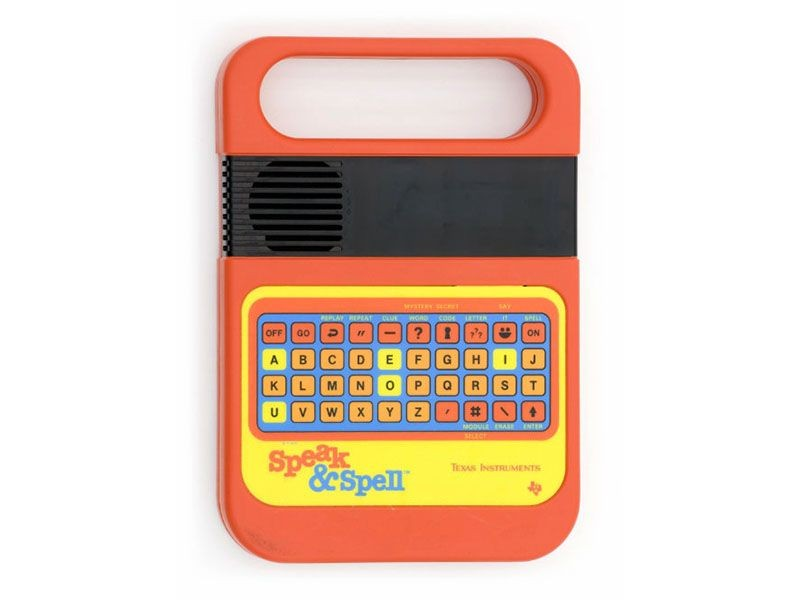

Speak & Spell
The first talking chip

Overview
The Speak & Spell was an electronic educational toy that used solid-state speech synthesis to teach children spelling and pronunciation. Introduced by Texas Instruments in 1978, it was one of the first handheld electronic devices to use interchangeable ROM cartridges and one of the first consumer products to put a digital model of the human vocal tract on a single integrated circuit. It became a cultural icon, appearing in films, music, and museums, and its voice chip technology influenced later speech-synthesis applications.
Deep dive
Development began in 1976 at Texas Instruments, led by Paul Breedlove, with an initial budget of $25,000. It grew out of TI’s research into linear predictive coding (LPC) speech synthesis. The goal was to create a talking learning aid for children ages 7 and up.
Speech synthesis was performed by the TMC0280 chip, later known as the TI TMS5100. It used a 10th-order LPC model implemented with pipelined digital signal-processing logic. Phoneme data were stored on a pair of 128 Kbit PMOS ROMs — at the time the largest-capacity ROMs in use. A professional speaker recorded the words; the recordings were processed in Dallas to drastically reduce the data rate to roughly 1,000 bits per second. The device had a small vacuum fluorescent display (VFD) capable of showing 8 characters at a time. Power came from four C batteries or a 6-volt DC adapter. Expansion modules plugged into a slot near the battery compartment to add word libraries and games.
Built-in games included Say It, Mystery Word, Secret Code, and Letter. Cartridge expansions included Vowel Power, Super Stumpers, Mighty Verbs, and an E.T. the Extra-Terrestrial tie-in module. The toy spawned companion products: Speak & Read (1980), Speak & Math (1980), and later Super Speak & Spell models.
The Speak & Spell was named an IEEE Milestone in 2009 for being the first use of a digital signal-processing IC for speech generation. It is held in the collections of the Computer History Museum and the Smithsonian National Museum of American History. Its synthesized voice became a staple of popular music (Kraftwerk, Depeche Mode album title Speak & Spell, Beck, E.T. soundtrack, etc.). It inspired the circuit-bending community, with musicians modifying units to create strange electronic instruments.
The toy’s voice was provided by radio announcer Mitch Carr. The 1978 American model had raised chiclet-style buttons; a 1980 redesign introduced a flat membrane keyboard. In E.T. the Extra-Terrestrial (1982), a Speak & Spell is the key component of E.T.’s improvised “phone home” device. A 2019 reissue by Basic Fun replaced the original synthesized voice with recorded dialog processed to sound synthesized and removed the cartridge slot.
Team & pioneers
- Larry Brantingham and Richard Wiggins Texas Instruments engineers who led development of the TMC0280 linear-predictive-coding speech synthesizer chip.
- Paul Breedlove Product manager and engineer who helped shape the educational toy around the new voice chip.
- Gene Frantz TI engineer and marketer closely associated with the product launch and later evangelism of the technology.
- Texas Instruments Semiconductor giant whose single-chip LPC speech model made consumer speech synthesis affordable.
Media

Sources
- Wikipedia, “Speak & Spell (toy).”
- Computer History Museum, “Speak & Spell.”
- Computer History Museum, “Graphics & Games Timeline.”
- IEEE Global History Network, “Milestones: Speak & Spell, the First Use of a Digital Signal Processing IC for Speech Generation, 1978.”
- Audrey Watters, “Speak & Spell: A Brief History,” Circuit Bent, 13 Mar 2020.
- Texas Instruments press release, “TI Talking Learning Aid Sets Pace for Innovative CES Introductions,” 11 June 1978.
- YouTube, “Speak & Spell (1978) Texas Instruments.”
- YouTube, “1978 Texas Instruments Speak & Spell.”